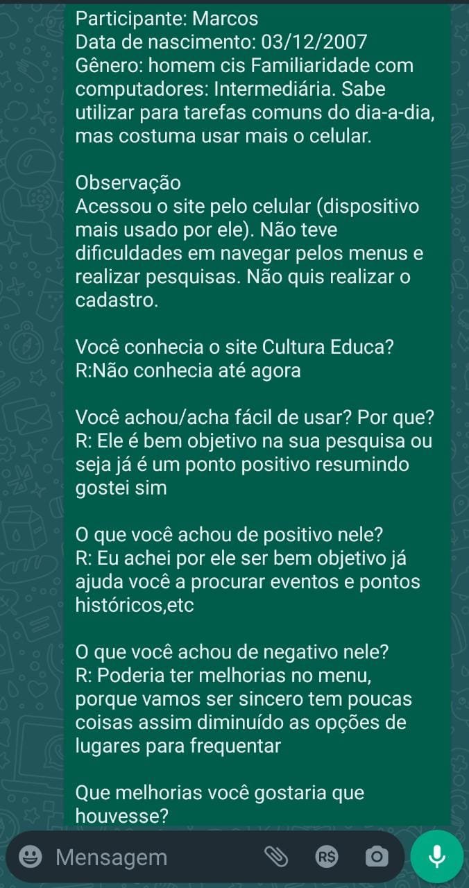

Cultura Educa Avaliação
Home
Extreme User Interview
Participante:
Marcos
Descrição:
Tem familiaridade intermediária com computadores. Sabe utilizar para tarefas comuns do dia-a-dia, mas costuma usar mais o celular.
Data de nascimento:
03/12/2007
Gênero:
Homem Cis
Você conhecia o site Cultura Educa?
Não conhecia até agora.
Você achou/acha fácil de usar?
Ele é bem objetivo na sua pesquisa ou seja já é um ponto positivo resumindo gostei sim.
O que você achou de positivo nele?
Eu achei por ele ser bem objetivo já ajuda você a procurar eventos e pontos históricos,etc.
O que você achou de negativo nele?
Poderia ter melhorias no menu, porque vamos ser sincero tem poucas coisas assim diminuído as opções de lugares para frequentar.
Que melhorias você gostaria que houvesse?
A única melhoria séria só colocar mais opções no menu.
Você recomendaria o site? Por que?
Para ser sincero eu não recomendaria, mas o site eu achei ótimo tirando a queda questão do menu principal.
Você pretende começar/continuar a usar?
Talvez
Fly on the Wall
Observação
Acessou o site pelo celular (dispositivo mais usado por ele). Não teve dificuldades em navegar pelos menus e realizar pesquisas. Não conseguiu utilizar o mapa. Não quis realizar o cadastro.
